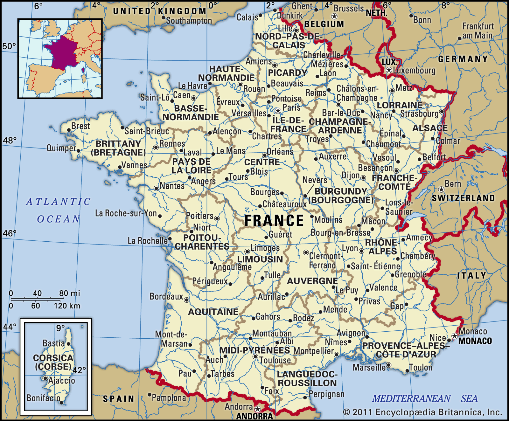
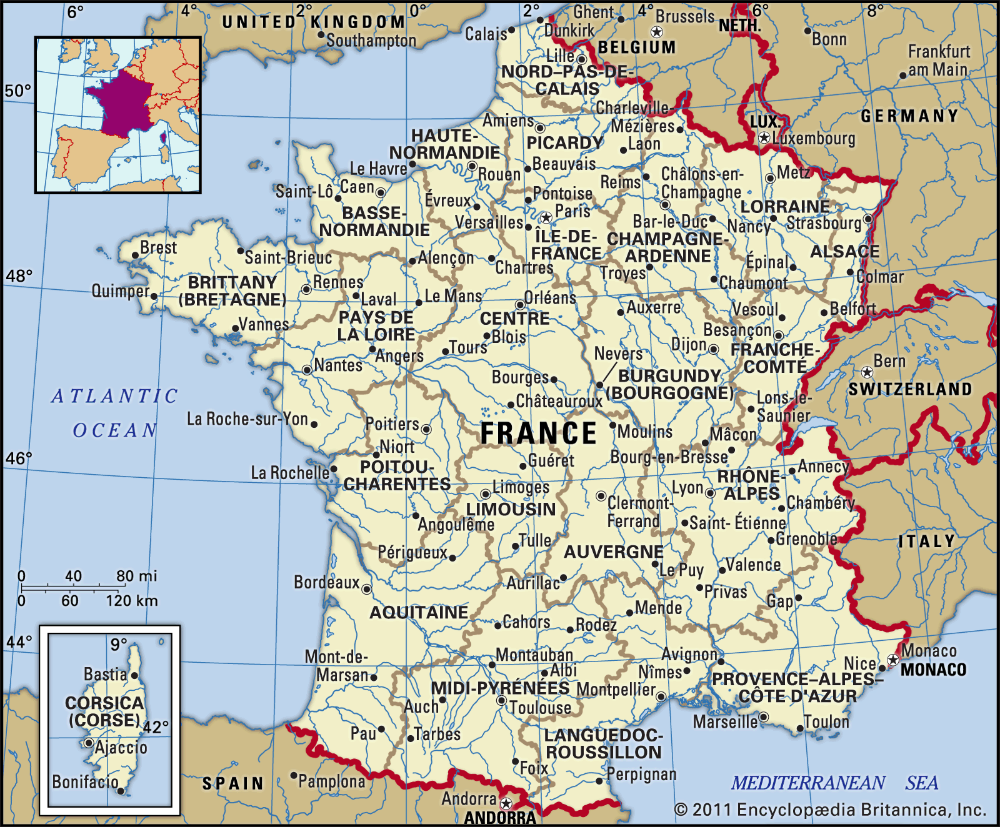

| Eiffel Tower: | 1887 | It is a symbol of France and one of the world's most recognizable landmarks. This metallic structure of 1,063 feet was designed by Gustave Eiffel. |
|---|---|---|
| Musée du Louvre: | 1793 | The world's largest museum and displays countless masterpieces. |
| Château de Versailles: | 1634 | A former royal residence and a world heritage site for 40 years. |